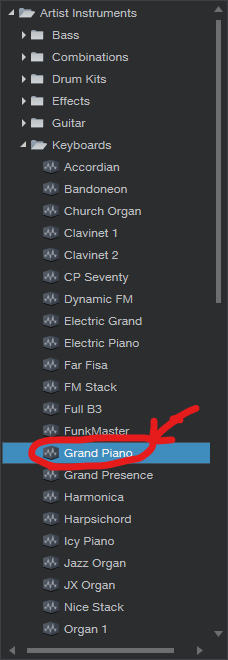
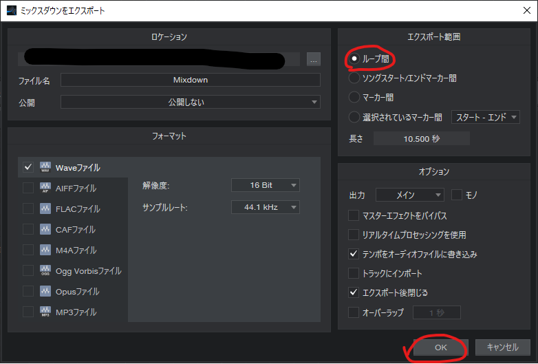

※筆者はStudio One有料版を使っているので、皆様の手元にはない謎の項目などが画像内にあるかもしれないです。
多少混乱するかもしれませんがご了承ください。
DAWを起動すると、以下のような画面が表示されます。


「新規ソング」をクリックしたのち、設定は特に変えず、OKをクリックしてください。(左上に丸ついてますが気にしないで)

この画面になったら、右の「インストゥルメント」をクリック。右になんか出ると思うのでそのうちの「PreSonus」をクリック。

「Presence」ってのがあると思うのでこれを赤矢印のように左にドラッグしてください。そうすると立ち上がります。下のような画面が出ると思います。
(出てないときは、左側の「Presence」と書いてあるところの右側にあるピアノマークをクリックしてください。)
上の画面で、赤丸付けた所をクリックして、「Keyboards」→「Grand Piano」を選択してください。ピアノの音になります。
元の画面に戻ります。次に、左上の「イベント」→「インストゥルメントパートを挿入」をクリック。なんか青い四角(青くないかも)が真ん中の空間に出てくると思います。

これが音を入力する場所です。(入力する音のことをノート(note)といいます。覚えて下さい)黄色丸の部分をドラッグすると伸ばせます。適宜伸ばしといてください。

次に、青い四角を一回クリックしてから、右下の「編集」という所をクリックすると、ピアノロールが開きます。開いたら、「スナップ」を「順応」に変更してください。16分音符より細かい音符や三連符を入力したい方は、適宜クオンタイズの値を変更してみてください。
(分数の表示になってると思います。1/n=n分音符ってことです)
黄色丸のとこらへんを上下にドラッグすると画面の大きさが変えられます。
さて、いよいよ入力です。少々複雑ですが、付いて来れることを願っています。
Ctrlキーを押しながらドラッグすると、ノートが入力されます。Ctrlを押したままもう一度入力したノートをクリックすると、消せます。
入力後、Ctrlを押さずにドラッグすると移動できます。また、黄色丸の部分をつかむと長さを変えられます。
入力中、上下にドラッグするとノートごとの音量(ベロシティ(velocity)といいます)が変えられます。ベロシティは下にある赤丸つけた謎の棒をドラッグでも変えられます。
Ctrlを押すやり方以外にも、左ちょい上、緑丸の所をクリックすればノートが置けます。その場合、ピンク丸のとこをクリックすればもとに戻ります。

フェーダーは、上の画像の右下、赤丸で囲った「ミックス」をクリックして青くすると出てきます。左の方のフェーダーで調節しましょう。いじってはいけないのは右側のMainです。

上画像赤丸の三角形みたいな形のところを、左端から曲が終わる一小節後くらいまでドラッグしてください。多分最初は左端にあると思います。

これでループが設定されるので、左上の「ソング」→「ミックスダウンをエクスポート」をクリックしてください。
左の出力形式は何でもいいです。だいたいwaveかmp3です。右上が「ループ間」になっていることを確認してOKを押すと、設定した場所に曲が書き出されます。
デフォでは「Mixdown」というファイル名です。